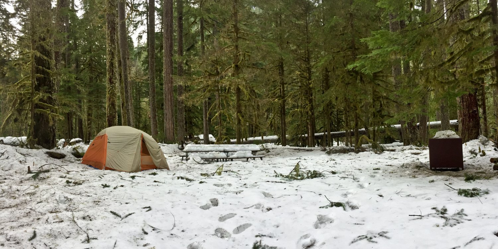

Coders spend many long hours staring at a computer screen. This site is designed to help coders to find camping areas to relax and unwind.
As a child, my favorite campground was Ipsut Creek in Mount Rainier National Park. Back then, it was accessible by car. Since the flood washed out the Carbon River Road in 2006, it is now only accessible by hiking in, and is now listed as a backcountry campground. If you like day hikes, I would highly recommend Ipsut Creek. There are many trails in the area.
Check out this awesome list of Washington campgrounds and other trip ideas!PNW Camping Trip